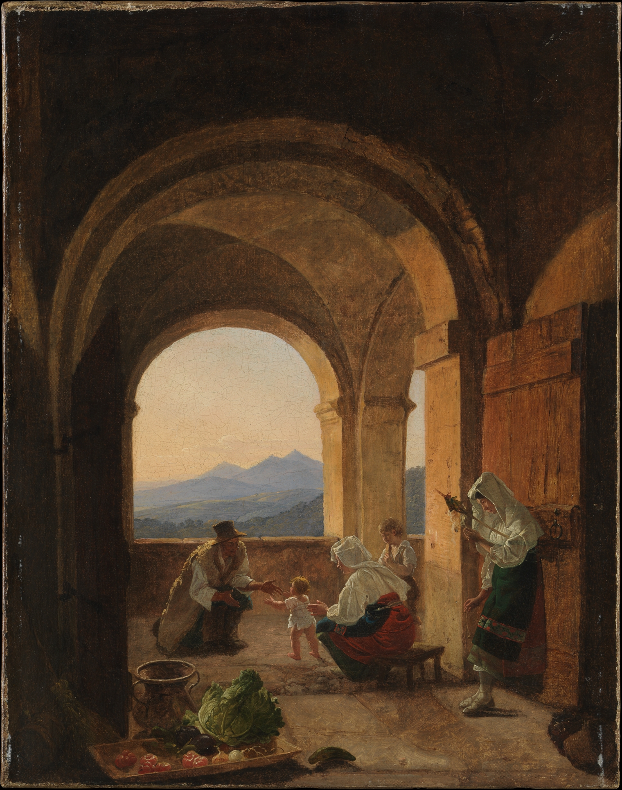
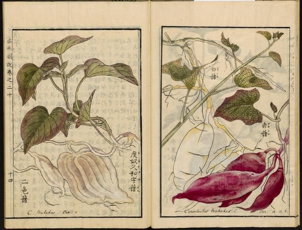
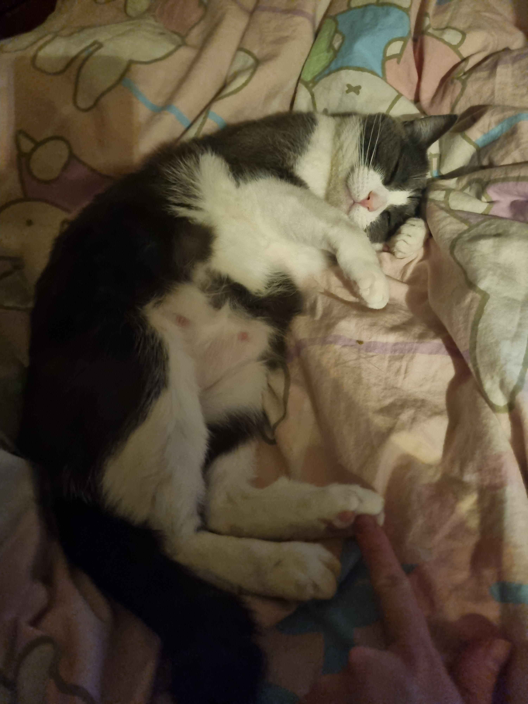

I think I'm doing this all out of order.
Assuming that you know things. But you probably don't know anything about what happened here, or didn't happen here.
My name is Art. There used to be more people here.

Title: First Steps
Artist: Franz Ludwig Catel (German, Berlin 1778–1856 Rome)
Date: ca. 1820–25
Medium: Oil on canvas
Dimensions: 18 3/4 x 14 3/4 in. (47.6 x 37.4 cm)
Classification: Paintings
The last time I saw another person was six years ago. The last time I spoke to another person was four and a half years ago.
I was born to two parents in a coastal city. I live in the same city now, in an apartment in a big building by myself except for my cat, Kumara. These are probably all words and concepts that you’ll have to work out, but don’t worry. The most important thing for you to understand is that it wasn’t always like this.
I wasn’t always the last person in the world.
But here’s the thing, nothing actually happened. Like, the world still exists as “normal”. You can still order food, order computer parts. I pay my bills every month, because they will shut them off – I checked. But there’s no people. It’s all automated. You can make an account on Instagram, but you won’t find any people left, just ads and AI. You can even make an account on a dating app. None of those people are real either - I checked that too.
I used to read a lot. I don’t read anything past 2038, because then it’s most not people writing. But for a while people wrote a lot of apocalypse stories. The world ended with a big explosion, or zombies. In the Matrix, there was a robotic uprising. In real life, we just disappeared.
I noticed this after a couple of months, and I started trying really hard to find people.
I literally started walking every day, just to see if there was anyone else. I actually wondered if everyone had been raptured, and I’d missed out. That might as well be true.
At the moment, I don’t know what happened. I think I’ve given up trying to work it out. Or at least, working it out feels like giving up. I don’t want to be the last person alive. But this is what lastliving.html was always about. The just-in-case.
Oh actually, I will explain that Kumara is the Te Reo word for sweet potato. This is a kumara:
Illustration from the Seikei Zusetsu (1800 approx), a Japanese agricultural encyclopedia.
And this is Kumara:
I didn't realise that my hand was in that picture. Funny. I won't include any more images of myself, but you can see that much of me.
I'm real.